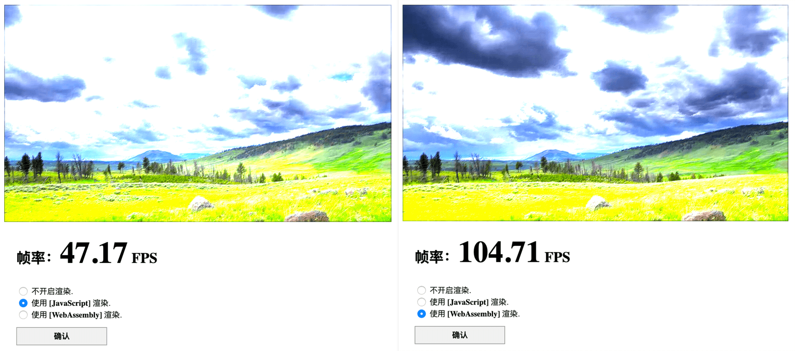
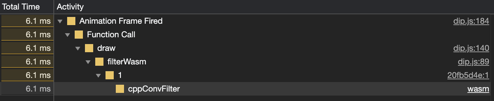
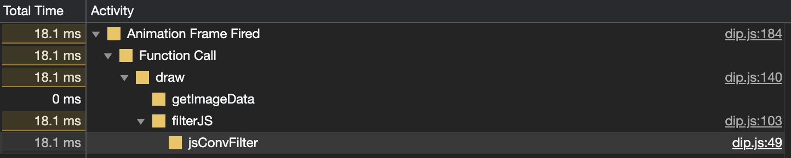

- 00 开篇词 我们为什么要了解 WebAssembly？.md.html
- 01 基础篇：学习此课程你需要了解哪些基础知识？.md.html
- 02 历史篇：为什么会有 WebAssembly 这样一门技术？.md.html
- 03 WebAssembly 是一门新的编程语言吗？.md.html
- 04 WebAssembly 模块的基本组成结构到底有多简单？.md.html
- 05 二进制编码：WebAssembly 微观世界的基本数据规则是什么？.md.html
- 06 WAT：如何让一个 WebAssembly 二进制模块的内容易于解读？.md.html
- 07 WASI：你听说过 WebAssembly 操作系统接口吗？.md.html
- 08 API：在 WebAssembly MVP 标准下你能做到哪些事？.md.html
- 09 WebAssembly 能够为 Web 前端框架赋能吗？.md.html
- 10 有哪些已经投入生产的 WebAssembly 真实案例？.md.html
- 11 WebAssembly 在物联网、多媒体与云技术方面有哪些创新实践？.md.html
- 12 有哪些优秀的 WebAssembly 编译器与运行时？.md.html
- 13 LLVM：如何将自定义的语言编译到 WebAssembly？.md.html
- 14 有哪些正在行进中的 WebAssembly Post-MVP 提案？.md.html
- 15 如何实现一个 WebAssembly 在线多媒体处理应用（一）？.md.html
- 16 如何实现一个 WebAssembly 在线多媒体处理应用（二）？.md.html
- 17 如何实现一个 WebAssembly 在线多媒体处理应用（三）？.md.html
- 18 如何进行 Wasm 应用的调试与分析？.md.html
- 19 如何应用 WASI 及其相关生态？.md.html
- 20 总结与答疑.md.html
- 结束语 WebAssembly，未来已来.md.html
- 捐赠
17 如何实现一个 WebAssembly 在线多媒体处理应用（三）？
你好，我是于航。
在上一节课中，我们已经完成了本次实践项目的其中一个核心部分，也就是由 JavaScript 实现的滤镜函数。并且还同时完成了整个 Web 应用与用户的 UI 交互控制部分、视频图像的渲染和绘制逻辑，以及帧率计算逻辑及显示逻辑。
在这节课里，我们将一起来完成整个应用的另外一个核心部分，同时也是整个实践的主角。让我们来看看，相较于 JavaScript 滤镜函数，由 Wasm 实现的同版本滤镜函数会带来怎样的性能提升呢？
编写 C/C++ 函数源码
首先，为了能够得到对应 Wasm 字节码格式的函数实现，我们需要首先准备由 C/C++ 等高级语言编写的源代码，然后再通过 Emscripten 将其编译到 Wasm 格式。这部分代码的主要逻辑，与上一篇中的 JavaScript 版本滤镜函数其实现逻辑基本相同。代码如下所示：
// dip.cc
// 引入必要的头文件；
#include <emscripten.h>
#include <cmath>
// 宏常量定义，表示卷积核矩阵的高和宽；
#define KH 3
#define KW 3
// 声明两个数组，分别用于存放卷积核数据与每一帧对应的像素点数据；
char kernel[KH][KW];
unsigned char data[921600];
// 将被导出的函数，放置在 extern "C" 中防止 Name Mangling；
extern "C" {
// 获取卷积核数组的首地址；
EMSCRIPTEN_KEEPALIVE auto* cppGetkernelPtr() { return kernel; }
// 获取帧像素数组的首地址；
EMSCRIPTEN_KEEPALIVE auto* cppGetDataPtr() { return data; }
// 滤镜函数；
EMSCRIPTEN_KEEPALIVE void cppConvFilter(
int width,
int height,
int divisor) {
const int half = std::floor(KH / 2);
for (int y = half; y < height - half; ++y) {
for (int x = half; x < width - half; ++x) {
int px = (y * width + x) * 4;
int r = 0, g = 0, b = 0;
for (int cy = 0; cy < KH; ++cy) {
for (int cx = 0; cx < KW; ++cx) {
const int cpx = ((y + (cy - half)) * width + (x + (cx - half))) * 4;
r += data[cpx + 0] * kernel[cy][cx];
g += data[cpx + 1] * kernel[cy][cx];
b += data[cpx + 2] * kernel[cy][cx];
}
}
data[px + 0] = ((r / divisor) > 255) ? 255 : ((r / divisor) < 0) ? 0 : r / divisor;
data[px + 1] = ((g / divisor) > 255) ? 255 : ((g / divisor) < 0) ? 0 : g / divisor;
data[px + 2] = ((b / divisor) > 255) ? 255 : ((b / divisor) < 0) ? 0 : b / divisor;
}
}
}
}
在这段代码中，我们将定义的所有函数均以 “cpp” 作为其前缀来命名，表明这个函数的实际定义来自于对应的 C/C++ 代码实现。其中，“cppConvFilter” 函数为主要的滤镜计算函数。在该函数中，我们保持着几乎与上一节课中，JavaScript 版滤镜函数同样的实现逻辑。
在代码的开始，我们首先以 “#include” 的方式，包含了很多需要使用到的 C/C++ 头文件。其中 “emscripten.h” 头文件便由 Emscripten 工具链提供，其中包含着众多与 Wasm 编译相关的宏和函数定义。
另外的 “cmath” 头文件，是原始 C 标准库中的 “math.h” 头文件在 C++ 中的对应。两者在所提供函数的功能上基本没有区别。我们将使用该头文件中提供的 “std::floor” 函数，去参与滤镜的计算过程。
接下来，我们使用 “#define” 定义了两个宏常量 “KH” 与 “KW”，分别表示卷积核的“高”与“宽”。并同时使用这两个常量，定义了用来存放实际卷积核矩阵数据的二维数组 “kernel”。类似的，我们还定义了用来存放每一帧对应像素数据的一维数组 “data”。
这里要注意的是，由于在 C/C++ 中，无法声明全局的动态大小数组，因此我们需要提前计算出，由 Web API “CanvasRenderingContext2D.getImageData” 所返回的，存放有每一帧对应像素数据的那个 Uint8ClampedArray 数组，在 C/C++ 中对应到 unsigned char 类型数组时的大小。
由于这两个数组所存储的单个元素其类型完全相同，因此我们直接使用这个得到的 Uint8ClampedArray 数组的大小，来作为对应 C/C++ 中 “data” 数组的大小。经过实践，我们得到的数组大小为 “921600”。
在 extern "C" {} 结构中，我们声明了所有需要导出到外部宿主环境（这里为浏览器的 JavaScript 环境）中使用的函数。其中除了 cppConvFilter 函数以外，还有另外的 cppGetkernelPtr 和 cppGetDataPtr 函数。这两个函数主要用来获取先前声明的数组 kernel 与 data 的首地址。通过这种方式，我们便可以在外部的 JavaScript 环境中，向定义在 C/C++ 中的这两个数组结构填充实际的运行时数据了。
使用 Emscripten 进行编译
当 C/C++ 源代码准备完毕后，我们便可以使用 Emscripten 来进行编译。与我们在实践项目的第一节课中介绍的 Emscripten 编译方式不同，这次我们不需要它帮助我们生成 JavaScript 胶水文件以及 HTML 文件，我们需要的仅是一个根据 C/C++ 代码生成的 Wasm 二进制模块文件，对于其他部分，我们将基于之前已经构建好的 JavaScript 和 HTML 代码来进行开发。
相较于 Emscripten 之前同时生成 JavaScript 胶水文件和 HTML 文件的方式，这种仅生成 Wasm 模块文件的方式，我们通常将其称为 “Standalone 模式”。对应的编译命令如下所示：
emcc dip.cc -s WASM=1 -O3 --no-entry -o dip.wasm
相比于之前的编译命令，这里我们做了两个更改。首先，我们将 “-o” 参数所指定的输出文件格式由原来 “.html” 变更为 “.wasm”。这样，我们可以告诉 Emscripten 我们希望以 “Standalone” 的方式来编译输入的 C/C++ 源码。“–no-entry” 参数告诉编译器，我们的 Wasm 模块没有声明 “main” 函数，因此不需要与 CRT（C Runtime Library）相关的功能进行交互。
在上述命令行执行完毕后，我们将会得到一个名为 “dip.wasm” 的 Wasm 二进制模块文件。
整合上下文资源
至此，我们便可以将这个通过 Emscripten 编译得到的名为 “dip.wasm” 的 Wasm 模块文件，整合到现阶段项目的 JavaScript 代码中。这里我们将使用 “WebAssembly.instantiate” 的方式来加载这个模块文件。对应的代码如下所示：
let bytes = await (await fetch('./dip.wasm')).arrayBuffer();
let { instance, module } = await WebAssembly.instantiate(bytes);
let {
cppConvFilter,
cppGetkernelPtr,
cppGetDataPtr,
memory } = instance.exports;
可以看到，通过 fetch 方法返回的 Respose 对象上的 arrayBuffer 函数，会将请求返回的内容解析为对应的 ArrayBuffer 形式。而这个 ArrayBuffer ，随后便会作为 WebAssembly.instantiate 方法的实际调用参数。
函数返回的 Promise 对象在被 resolve 之后，我们可以得到对应的 WebAssembly.Instance 实例对象和 WebAssembly.Module 模块对象（这里分别对应到名为 instance 和 module 的属性上）。然后在名为 instance 的变量中，我们便可以获得从 Wasm 模块导出的所有方法。
眼尖的你一定发现了，上面的代码除了从 instance.exports 对象中导出了定义在 Wasm 模块内的函数以外，还有另一个名为 memory 的对象。这个 memory 对象便代表着模块实例所使用到的线性内存段。线性内存段在 JavaScript 中的表示形式，也就是我们上文中提到的，是一个 ArrayBuffer 对象。
当然，这里 memory 实际上是一个名为 WebAssembly.Memory 的包装类对象，而该对象上的 “buffer” 属性中，便实际存放着对应模块线性内存的 ArrayBuffer 对象。
下面，我们便可以通过调用相应的方法来完成 Wasm 滤镜函数与 Web 应用的整合。
首先，我们需要将在 JavaScript 代码中获得到的卷积核矩阵数据，以及每一帧所对应的画面像素数据，填充到我们之前在 C/C++ 代码中定义的相应数组中。为了完成这一步，我们需要首先调用从模块实例中导出的 “cppGetDataPtr” 和 “cppGetkernelPtr” 两个方法，来分别获得这两个数组的首地址，也就是在模块实例线性内存段中的具体偏移位置。
然后，我们将使用 “Uint8Array” 与 “Int8Array” 这两个 TypedArray 类型来作为模块线性内存的操作视图，并向其中写入数据。
待数据填充完毕后，我们便可以调用从模块中导出的 “cppConvFilter” 方法来为原始的像素数据添加滤镜。
待方法调用完毕后，我们将通过 TypedArray 的 subarray 方法来返回一个，包含有已处理完毕像素数据的新的 TypedArray，这些数据随后将会通过名为 CanvasRenderingContext2D.putImageData() 的 API 被重新绘制在 <canvas> 对象上，以实现画面的更新。
这部分功能对应的代码如下所示：
// 获取 C/C++ 中存有卷积核矩阵和帧像素数据的数组，在 Wasm 线性内存段中的偏移位置；
const dataOffset = cppGetDataPtr();
const kernOffset = cppGetkernelPtr();
// 扁平化卷积核的二维数组到一位数组，以方便数据的填充；
const flatKernel = kernel.reduce((acc, cur) => acc.concat(cur), []);
// 为 Wasm 模块的线性内存段设置两个用于进行数据操作的视图，分别对应卷积核矩阵和帧像素数据；
let Uint8View = new Uint8Array(memory.buffer);
let Int8View = new Int8Array(memory.buffer);
// 填充卷积核矩阵数据；
Int8View.set(flatKernel, kernOffset);
// 封装的 Wasm 滤镜处理函数；
function filterWASM (pixelData, width, height) {
const arLen = pixelData.length;
// 填充当前帧画面的像素数据；
Uint8View.set(pixelData, dataOffset);
// 调用滤镜处理函数；
cppConvFilter(width, height, 4);
// 返回经过处理的数据；
return Uint8View.subarray(dataOffset, dataOffset + arLen);
}
这里需要注意的是，我们之前在 JavaScript 中使用的卷积核矩阵数组，实际上是以二维数组的形式存在的。而为了能够方便地将这部分数据填充到 Wasm 线性内存中，这里我们将其扁平化成了一维数组，并存放到变量 flatKernel 中。
另外，我们仅将那些在视频播放过程中可能会发生变化的部分（这里主要是指每一帧需要填充到 Wasm 模块实例线性内存的像素数据），都单独整和到了名为 filterWasm 的函数中，这样在动画的播放过程中，可以减少不必要的数据传递过程。
性能对比
最后我们选择了如下两款市面上最为常见的浏览器，来分别测量我们构建的这个 DIP Web 应用在 JavaScript 滤镜和 Wasm 滤镜这两个选项下的视频播放帧率。
- Chrome Version 84.0.4147.89 (Official Build) (64-bit)
- Firefox Version 79.0
实际测试结果的截图如下所示。其中左侧为 JavaScript 版本滤镜函数，右侧为对应的 Wasm 版本滤镜函数。
首先是 Chrome：
然后是 Firefox：

可以看到，同样逻辑的滤镜函数，在对应的 JavaScript 实现版本和 Wasm 实现版本下有着极大的性能差异。Wasm 版本函数的帧画面实时处理效率几乎是对应 JavaScript 版本函数的一倍之多。当然，上述的性能对比结果仅供参考，应用的实际表现是一个综合性的结果，与浏览器版本、代码实现细节、编译器版本甚至操作系统版本都有着密切的关系。
如果再通过 Chrome 的 Performance 工具来查看，jsConvFilter 与 cppConvFilter 这两个分别对应的 JavaScript 滤镜实现与 Wasm 滤镜实现函数的运行耗时，你可以发现如下所示的结果：


可以看到，JavaScript 滤镜函数实现的运行耗时是 Wasm 版本的将近 3 倍。但由于 getImageData 函数在应用实际运行时也会占用一部分时间，因此使得在每一帧画面的刷新和滤镜渲染过程中，整个 Wasm 滤镜处理过程的耗时只能被优化到对应 JavaScript 版本的一半时间左右。同样的，Wasm 实现下通过 Uint8View.set 向 Wasm 实例线性内存段中填充像素数据的过程也同样会占用一定的额外耗时，但这部分的比例相对很小。
总结
好了，讲到这，今天的内容也就基本结束了。最后我来给你总结一下。
通过完整的三节课，我们讲解了如何从第一行代码开始着手编写一个完整的 Wasm Web 应用。在构建应用的过程中，我们知道了如何使用 Emscripten 来直接编译输入的 C/C++ 代码到一个完整的、可以直接运行的 Web 应用；或者是基于 “Standalone 模式”来仅仅输出源代码对应的 Wasm 二进制模块文件。
不仅如此，我们还知道了 Emscripten 在被作为工具链使用时，它还为我们提供了诸如 EMSCRIPTEN_KEEPALIVE 等宏函数，以支持编译过程的正常进行。Emscripten 为我们提供了极其强大的宏函数支持以及对 Web API 的无缝整合。
甚至你可以直接将基于 OpenGL 编写的 C/C++ 应用编译成 Wasm Web 应用，而无需做任何源代码上的修改。Emscripten 会通过相应的 JavaScript 胶水代码来处理好 OpenGL 与 WebGL 的调用映射关系，让你真正地做到“无痛迁移”。
在编译完成后，我们还学习了如何通过 Web API 和 JavaScript API 来加载并实例化一个 Wasm 模块对象。WebAssembly.instantiate 与 WebAssembly.instantiateStreaming 这两个主要用来实例化 Wasm 对象的 Web API 在模块实例化效率上的不同。基于“流式编译”的特性，后者往往通常会有着更高的模块实例化性能。
最后，你应该知道了如何通过 TypedArray 向 Wasm 模块实例的线性内存段中填充数据，以及如何从中读取数据。在本文这个实例中，我们分别使用了 set 与 subarray 这两个 TypedArray 对象上的方法来分别达到这两个目的。
通过本次实践，我们在最后的性能对比中，也清楚地看到了 Wasm 所带来的 Web 应用的性能提升。希望你也能够通过这次实践，亲身体会到 Wasm 在不久的将来，所能够带给 Web 应用的一系列变革。
课后练习
最后，我们来做一个小练习吧。
你可以尝试在其他的，诸如 Edge 和 Safari 浏览器中运行这个 Wasm Web 应用， 并查看在这些浏览器中，当分别使用 JavaScript 版滤镜函数和 Wasm 滤镜函数时的画面实时处理帧率。
今天的课程就结束了，希望可以帮助到你，也希望你在下方的留言区和我参与讨论，同时欢迎你把这节课分享给你的朋友或者同事，一起交流一下。
© 2019 - 2023 Liangliang Lee. Powered by gin and hexo-theme-book.